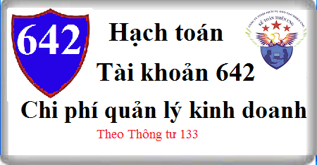

Hướng dẫn cách hạch toán Tài khoản 642 theo thông tư 133, Cách hạch toán chi phí bán hàng, quản lý doanh nghiệp, tiền lương, tiền công, khấu hao TSCĐ, thuế môn bài, phí lệ phí, hội nghị, tiếp khách, thuế GTGT không được khấu trừ, tiêu dùng nội bộ, cho biếu tặng, khuyến mãi, quảng cáo, hoa hồng đại lý, kết chuyển chi phí quản lý kinh doanh …
1. Nguyên tắc kế toán Tài khoản 642 - Chi phí quản lý kinh doanh
1.1. Tài khoản này dùng để phản ánh các khoản chi phí quản lý kinh doanh bao gồm chi phí bán hàng và chi phí quản lý doanh nghiệp:
Chi phí bán hàng bao gồm các chi phí thực tế phát sinh trong quá trình bán sản phẩm, hàng hóa, cung cấp dịch vụ, bao gồm các chi phí chào hàng, giới thiệu sản phẩm, quảng cáo sản phẩm, hoa hồng bán hàng, chi phí bảo hành sản phẩm, hàng hóa (trừ hoạt động xây lắp), chi phí bảo quản, đóng gói, vận chuyển, lương nhân viên bộ phận bán hàng (tiền lương, tiền công, các khoản phụ cấp,...), bảo hiểm xã hội, bảo hiểm y tế, kinh phí công đoàn, bảo hiểm thất nghiệp, bảo hiểm tai nạn lao động của nhân viên bán hàng; chi phí vật liệu, công cụ lao động, khấu hao TSCĐ dùng cho bộ phận bán hàng; dịch vụ mua ngoài (điện, nước, điện thoại, fax,...); chi phí bằng tiền khác.
Chi phí quản lý doanh nghiệp bao gồm các chi phí quản lý chung của doanh nghiệp bao gồm các chi phí về lương nhân viên bộ phận quản lý doanh nghiệp (tiền lương, tiền công, các khoản phụ cấp,...); bảo hiểm xã hội, bảo hiểm y tế, kinh phí công đoàn, bảo hiểm thất nghiệp của nhân viên quản lý doanh nghiệp; chi phí vật liệu văn phòng, công cụ lao động, khấu hao TSCĐ dùng cho quản lý doanh nghiệp; tiền thuê đất, thuế môn bài; khoản lập dự phòng phải thu khó đòi; dịch vụ mua ngoài (điện, nước, điện thoại, fax, bảo hiểm tài sản, cháy nổ...); chi phí bằng tiền khác (tiếp khách, hội nghị khách hàng...).
1.2. Các khoản chi phí bán hàng, chi phí quản lý doanh nghiệp không được coi là chi phí được trừ theo quy định của Luật thuế TNDN nhưng có đầy đủ hóa đơn chứng từ và đã hạch toán đúng theo Chế độ kế toán thì không được ghi giảm chi phí kế toán mà chỉ điều chỉnh trong quyết toán thuế TNDN để làm tăng số thuế TNDN phải nộp.
1.3. Tài khoản 642 được mở chi tiết theo từng nội dung chi phí theo quy định. Tùy theo yêu cầu quản lý của từng ngành, từng doanh nghiệp, tài khoản 642 có thể được mở chi tiết theo từng loại chi phí như: chi phí bán hàng, chi phí quản lý doanh nghiệp. Trong từng loại chi phí được theo dõi chi tiết theo từng nội dung chi phí như:
a) Đối với chi phí bán hàng:
- Chi phí nhân viên: Phản ánh các khoản phải trả cho nhân viên bán hàng, nhân viên đóng gói, vận chuyển, bảo quản sản phẩm, hàng hóa,... bao gồm tiền lương, tiền ăn giữa ca, tiền công và các khoản trích bảo hiểm xã hội, bảo hiểm y tế, kinh phí công đoàn, bảo hiểm thất nghiệp,...
- Chi phí vật liệu, bao bì: Phản ánh các chi phí vật liệu, bao bì xuất dùng cho việc bảo quản, tiêu thụ sản phẩm, hàng hóa, dịch vụ, như chi phí vật liệu đóng gói sản phẩm, hàng hóa, chi phí vật liệu, nhiên liệu dùng cho bảo quản, bốc vác, vận chuyển sản phẩm, hàng hóa trong quá trình tiêu thụ, vật liệu dùng cho sửa chữa, bảo quản TSCĐ,... dùng cho bộ phận bán hàng.
- Chi phí dụng cụ, đồ dùng: Phản ánh chi phí về công cụ, dụng cụ phục vụ cho quá trình tiêu thụ sản phẩm, hàng hóa như dụng cụ đo lường, phương tiện tính toán, phương tiện làm việc,...
- Chi phí khấu hao TSCĐ: Phản ánh chi phí khấu hao TSCĐ ở bộ phận bảo quản, bán hàng, như nhà kho, cửa hàng, bến bãi, phương tiện bốc dỡ, vận chuyển, phương tiện tính toán, đo lường, kiểm nghiệm chất lượng,...
- Chi phí bảo hành: Dùng để phản ánh khoản chi phí bảo hành sản phẩm, hàng hóa. Riêng chi phí sửa chữa và bảo hành công trình xây lắp phản ánh ở TK 154 “Chi phí sản xuất kinh doanh dở dang” mà không phản ánh ở TK này.
- Chi phí dịch vụ mua ngoài: Phản ánh các chi phí dịch vụ mua ngoài phục vụ cho bán hàng như chi phí thuê ngoài sửa chữa TSCĐ phục vụ trực tiếp cho khâu bán hàng, tiền thuê kho, thuê bãi, tiền thuê bốc vác, vận chuyển sản phẩm, hàng hóa đi bán, tiền trả hoa hồng cho đại lý bán hàng, cho đơn vị nhận ủy thác xuất khẩu,...
- Chi phí bằng tiền khác: Phản ánh các chi phí bằng tiền khác phát sinh trong khâu bán hàng ngoài các chi phí nêu trên như chi phí tiếp khách ở bộ phận bán hàng, chi phí giới thiệu sản phẩm, hàng hóa, khuyến mại, quảng cáo, chào hàng, chi phí hội nghị khách hàng..
b) Đối với chi phí quản lý doanh nghiệp:
- Chi phí nhân viên quản lý: Phản ánh các khoản phải trả cho cán bộ nhân viên quản lý doanh nghiệp, như tiền lương, các khoản phụ cấp, bảo hiểm xã hội, bảo hiểm y tế, kinh phí công đoàn, bảo hiểm thất nghiệp của Ban Giám đốc, nhân viên quản lý ở các phòng, ban của doanh nghiệp.
- Chi phí vật liệu quản lý: Phản ánh chi phí vật liệu xuất dùng cho công tác quản lý doanh nghiệp như văn phòng phẩm... vật liệu sử dụng cho việc sửa chữa TSCĐ, công cụ, dụng cụ,... (giá có thuế hoặc chưa có thuế GTGT).
- Chi phí đồ dùng văn phòng: Phản ánh chi phí dụng cụ, đồ dùng văn phòng dùng cho công tác quản lý (giá có thuế hoặc chưa có thuế GTGT).
- Chi phí khấu hao TSCĐ: Phản ánh chi phí khấu hao TSCĐ dùng chung cho doanh nghiệp như: Nhà cửa làm việc của các phòng ban, kho tàng, vật kiến trúc, phương tiện vận tải truyền dẫn, máy móc thiết bị quản lý dùng trên văn phòng,...
- Thuế, phí và lệ phí: Phản ánh chi phí về thuế, phí và lệ phí như: thuế môn bài, tiền thuê đất,... và các khoản phí, lệ phí khác.
- Chi phí dự phòng: Phản ánh các khoản dự phòng phải thu khó đòi, dự phòng phải trả tính vào chi phí sản xuất, kinh doanh của doanh nghiệp.
- Chi phí dịch vụ mua ngoài: Phản ánh các chi phí dịch vụ mua ngoài phục vụ cho công tác quản lý doanh nghiệp; các khoản chi mua và sử dụng các tài liệu kỹ thuật, bằng sáng chế,... (không đủ tiêu chuẩn ghi nhận TSCĐ) được tính theo phương pháp phân bổ dần vào chi phí quản lý doanh nghiệp; tiền thuê TSCĐ, chi phí trả cho nhà thầu phụ.
- Chi phí bằng tiền khác: Phản ánh các chi phí khác thuộc quản lý chung của doanh nghiệp, ngoài các chi phí nêu trên, như: Chi phí hội nghị, tiếp khách, công tác phí, tàu xe, khoản chi cho lao động nữ,...
1.4. Đối với sản phẩm, hàng hóa dùng để khuyến mại, quảng cáo:
- Trường hợp xuất sản phẩm, hàng hóa để khuyến mại, quảng cáo không thu tiền, không kèm theo các điều kiện khác như phải mua sản phẩm, hàng hóa thì ghi nhận giá trị hàng khuyến mại, quảng cáo vào chi phí bán hàng.
- Trường hợp xuất sản phẩm, hàng hóa để khuyến mại, quảng cáo nhưng khách hàng chỉ được nhận hàng khuyến mại, quảng cáo kèm theo các điều kiện khác như phải mua sản phẩm, hàng hóa (ví dụ như mua 2 sản phẩm được tặng 1 sản phẩm....) thì kế toán phản ánh giá trị hàng khuyến mại, quảng cáo vào giá vốn hàng bán (trường hợp này bản chất giao dịch là giảm giá hàng bán).
- Trường hợp doanh nghiệp có hoạt động thương mại được nhận hàng hóa (không phải trả tiền) từ nhà sản xuất, nhà phân phối để quảng cáo, khuyến mại cho khách hàng mua hàng của nhà sản xuất, nhà phân phối:
+ Khi nhận hàng của nhà sản xuất (không phải trả tiền) dùng để khuyến mại, quảng cáo cho khách hàng, nhà phân phối phải theo dõi chi tiết số lượng hàng trong hệ thống quản trị nội bộ của mình và thuyết minh trên Bản thuyết minh Báo cáo tài chính đối với hàng nhận được và số hàng đã dùng để khuyến mại cho người mua (như hàng hóa nhận giữ hộ).
+ Khi hết chương trình khuyến mại, nếu không phải trả lại nhà sản xuất số hàng khuyến mại chưa sử dụng hết, kế toán ghi nhận thu nhập khác là giá trị số hàng khuyến mại không phải trả lại.
2. Kết cấu và nội dung Tài khoản 642 - Chi phí quản lý kinh doanh
Bên Nợ:
- Các chi phí quản lý kinh doanh phát sinh trong kỳ;
- Số dự phòng phải thu khó đòi, dự phòng phải trả (Chênh lệch giữa số dự phòng phải lập kỳ này lớn hơn số dự phòng đã lập kỳ trước chưa sử dụng hết);
Bên Có:
- Các khoản được ghi giảm chi phí quản lý kinh doanh;
- Hoàn nhập dự phòng phải thu khó đòi, dự phòng phải trả (chênh lệch giữa số dự phòng phải lập kỳ này nhỏ hơn số dự phòng đã lập kỳ trước chưa sử dụng hết);
- Kết chuyển chi phí quản lý kinh doanh vào tài khoản 911 "Xác định kết quả kinh doanh".
Tài khoản 642 không có số dư cuối kỳ.
Tài khoản 642 - Chi phí quản lý kinh doanh có 2 tài khoản cấp 2:
- Tài khoản 6421 - Chi phí bán hàng: Phản ánh chi phí bán hàng thực tế phát sinh trong quá trình bán sản phẩm, hàng hóa và cung cấp dịch vụ trong kỳ của doanh nghiệp và tình hình kết chuyển chi phí bán hàng sang TK 911- Xác định kết quả kinh doanh.
- Tài khoản 6422 - Chi phí quản lý doanh nghiệp: Phản ánh chi phí quản lý chung của doanh nghiệp phát sinh trong kỳ và tình hình kết chuyển chi phí quản lý doanh nghiệp sang TK 911 - Xác định kết quả kinh doanh.
3. Cách hạch toán Chi phí quản lý kinh doanh Tài khoản 642:
3.1. Tiền lương, tiền công, phụ cấp và các khoản khác phải trả cho nhân viên bộ phận bán hàng, bộ phận quản lý doanh nghiệp, trích bảo hiểm xã hội, bảo hiểm y tế, kinh phí công đoàn, bảo hiểm thất nghiệp, bảo hiểm tai nạn lao động các khoản hỗ trợ khác (như bảo hiểm nhân thọ, bảo hiểm hưu trí tự nguyện...) của nhân viên phục vụ trực tiếp cho quá trình bán sản phẩm, hàng hóa, cung cấp dịch vụ, nhân viên quản lý doanh nghiệp, ghi:
Nợ TK 642 - Chi phí quản lý kinh doanh (TK cấp 2 phù hợp)
Có các Tài khoản 334, 338.
3.2. Giá trị vật liệu xuất dùng, hoặc mua vào sử dụng ngay cho bộ phận bán hàng, bộ phận quản lý doanh nghiệp như: xăng, dầu, mỡ để chạy xe, vật liệu dùng cho sửa chữa TSCĐ chung của doanh nghiệp,..., ghi:
Nợ TK 642 - Chi phí quản lý kinh doanh (TK cấp 2 phù hợp)
Nợ TK 133 - Thuế GTGT được khấu trừ (1331) (nếu được khấu trừ)
Có TK 152 Nguyên liệu, vật liệu
Có các Tài khoản 111, 112, 242, 331,...
3.3. Trị giá dụng cụ, đồ dùng văn phòng xuất dùng hoặc mua về sử dụng ngay cho bộ phận bán hàng, bộ phận quản lý doanh nghiệp không qua nhập kho được tính trực tiếp một lần vào chi phí bán hàng, chi phí quản lý doanh nghiệp, ghi:
Nợ TK 642 - Chi phí quản lý kinh doanh (TK cấp 2 phù hợp)
Nợ TK 133 - Thuế GTGT được khấu trừ (nếu có)
Có TK 153 - Công cụ dụng cụ
Có các TK 111, 112, 331,...
3.4. Trích khấu hao TSCĐ dùng cho quản lý chung của doanh nghiệp, bộ phận bán hảng như: Nhà cửa, vật kiến trúc, kho tàng, thiết bị truyền dẫn,..., ghi:
Nợ TK 642 - Chi phí quản lý kinh doanh (TK cấp 2 phù hợp)
Có TK 214 - Hao mòn TSCĐ.
3.5. Thuế môn bài, tiền thuê đất,... phải nộp Nhà nước, ghi:
Nợ TK 642 - Chi phí quản lý kinh doanh (6422)
Có TK 333 - Thuế và các khoản phải nộp Nhà nước.
3.6. Lệ phí giao thông, lệ phí qua cầu, phà phải nộp, ghi:
Nợ TK 642 - Chi phí quản lý kinh doanh (6422)
Có các TK 111, 112,…
3.7. Kế toán dự phòng các khoản phải thu khó đòi khi lập Báo cáo tài chính:
- Trường hợp số dự phòng phải thu khó đòi phải trích lập kỳ này lớn hơn số đã trích lập từ kỳ trước, kế toán trích lập bổ sung phần chênh lệch, ghi:
Nợ TK 642 - Chi phí quản lý kinh doanh (6422)
Có TK 229 - Dự phòng tổn thất tài sản (2293).
- Trường hợp số dự phòng phải thu khó đòi phải trích lập kỳ này nhỏ hơn số đã trích lập từ kỳ trước, kế toán hoàn nhập phần chênh lệch, ghi:
Nợ TK 229 - Dự phòng tổn thất tài sản (2293)
Có TK 642 - Chi phí quản lý kinh doanh (6422).
- Việc xác định thời gian quá hạn của khoản nợ phải thu được xác định là khó đòi phải trích lập dự phòng được căn cứ vào thời gian trả nợ gốc theo hợp đồng mua, bán ban đầu, không tính đến việc gia hạn nợ giữa các bên.
- Doanh nghiệp trích lập dự phòng nợ phải thu khó đòi đối với khoản cho vay, ký cược, ký quỹ, tạm ứng… được quyền nhận lại tương tự như đối với các khoản phải thu theo quy định của pháp luật.
3.8. Khi trích lập dự phòng phải trả cần lập cho hợp đồng có rủi ro lớn và dự phòng phải trả khác (trừ dự phòng phải trả về bảo hành sản phẩm, hàng hóa, công trình xây dựng), ghi:
Nợ TK 642 - Chi phí quản lý kinh doanh
Có TK 352 - Dự phòng phải trả.
Trường hợp số dự phòng phải trả cần lập ở cuối kỳ kế toán này nhỏ hơn số dự phòng phải trả đã lập ở cuối kỳ kế toán trước chưa sử dụng hết thì số chênh lệch được hoàn nhập ghi giảm chi phí, ghi:
Nợ TK 352 - Dự phòng phải trả
Có TK 642 - Chi phí quản lý kinh doanh.
3.9. Tiền điện thoại, điện, nước mua ngoài phải trả, chi phí sửa chữa TSCĐ dùng cho quản lý kinh doanh một lần với giá trị nhỏ, ghi:
Nợ TK 642 - Chi phí quản lý kinh doanh (6422)
Nợ TK 133 - Thuế GTGT được khấu trừ (nếu có)
Có các TK 111, 112, 331, 335,...
3.10. Đối với chi phí sửa chữa lớn TSCĐ phục vụ cho bán hàng. quản lý doanh nghiệp:
a) Trường hợp sử dụng phương pháp trích trước chi phí sửa chữa lớn TSCĐ:
- Khi chi phí sửa chữa lớn TSCĐ thực tế phát sinh, ghi:
Nợ TK 2413 – Sửa chữa lớn TSCĐ
Nợ TK 133 - Thuế GTGT được khấu trừ
Có các Tài khoản 331, 111, 112, 152,...
b) Trường hợp sử dụng phương pháp trích trước chi phí sửa chữa lớn TSCĐ:
- Khi trích trước chi phí sửa chữa lớn TSCĐ vào chi phí bán hàng, chi phí quản lý doanh nghiệp, ghi:
Nợ TK 642 - Chi phí quản lý kinh doanh (6422)
Có TK 335 - Chi phí phải trả (nếu việc sửa chữa đã thực hiện trong kỳ nhưng chưa nghiệm thu hoặc chưa có hóa đơn).
Có TK 352 - Dự phòng phải trả (Nếu đơn vị trích trước chi phí sửa chữa cho TSCĐ theo yêu cầu kỹ thuật phải bảo dưỡng, duy tu định kỳ)
- Kết chuyển chi phí sửa chữa lớn TSCĐ khi hoàn thành, bàn giao đưa vào sử dụng, ghi:
Nợ các TK 335, 352
Nợ TK 133 - Thuế GTGT được khấu trừ
Có TK 2413 – Sửa chữa lớn TSCĐ.
c) Trường hợp phân bổ dần chi phí sửa chữa lớn TSCĐ, ghi:
- Kết chuyển chi phí sửa chữa lớn TSCĐ khi hoàn thành, bàn giao đưa vào sử dụng, ghi:
Nợ TK 242 - Chi phí trả trước.
Có TK 2413 – Sửa chữa lớn TSCĐ.
- Định kỳ, phân bổ chi phí sửa chữa lớn TSCĐ vào chi phí bán hàng và chi phí quản lý doanh nghiệp, ghi:
Nợ TK 642 - Chi phí quản lý kinh doanh
Có TK 242 - Chi phí trả trước.
3.11. Chi phí phát sinh về hội nghị, tiếp khách, chi cho lao động nữ, chi cho nghiên cứu, đào tạo, chi nộp phí tham gia hiệp hội và chi phí quản lý khác, ghi:
Nợ TK 642 - Chi phí quản lý kinh doanh (6422)
Nợ TK 133 - Thuế GTGT được khấu trừ (nếu được khấu trừ thuế)
Có các TK 111, 112, 331,...
3.12. Thuế GTGT đầu vào không được khấu trừ phải tính vào chi phí quản lý kinh doanh, ghi:
Nợ TK 642 - Chi phí quản lý kinh doanh
Có TK 133 - Thuế GTGT được khấu trừ (1331, 1332).
3.13. Đối với sản phẩm, hàng hoá tiêu dùng nội bộ sử dụng cho mục đích bán hàng, quản lý doanh nghiệp, ghi:
Nợ TK 642 - Chi phí quản lý kinh doanh (6422)
Có các Tài khoản 155, 156 (chi phí sản xuất sản phẩm hoặc giá vốn hàng hoá).
3.14. Khi phát sinh các khoản ghi giảm chi phí bán hàng, chi phí quản lý doanh nghiệp, ghi:
Nợ các TK 111, 112,...
Có TK 642 - Chi phí quản lý kinh doanh (TK cấp 2 phù hợp)
3.15. Trường hợp sản phẩm, hàng hoá dùng để biếu, tặng
- Trường hợp sản phẩm, hàng hoá dùng để biếu, tặng cho khách hàng bên ngoài doanh nghiệp được tính vào chi phí sản xuất, kinh doanh:
Nợ TK 642 - Chi phí quản lý kinh doanh (TK cấp 2 phù hợp)
Có các TK 155, 156.
Nếu phải kê khai thuế GTGT đầu ra, ghi:
Nợ TK 642 - Chi phí quản lý kinh doanh
Có TK 3331 - Thuế GTGT phải nộp.
- Trường hợp sản phẩm, hàng hoá dùng để biếu, tặng cho cán bộ công nhân viên được trang trải bằng quỹ khen thưởng, phúc lợi:
Nợ TK 353 - Quỹ khen thưởng, phúc lợi (tổng giá thanh toán)
Có TK 511 - Doanh thu bán hàng và cung cấp dịch vụ
Có TK 3331 - Thuế GTGT phải nộp (33311).
Đồng thời ghi nhận giá vốn hàng bán đối với giá trị sản phẩm, hàng hoá, NVL dùng để biếu, tặng công nhân viên và người lao động:
Nợ TK 632 - Giá vốn hàng bán
Có các TK 155, 156.
3.16. Đối với sản phẩm, hàng hóa dùng để khuyến mại, quảng cáo
- Đối với hàng hóa mua vào hoặc sản phẩm do doanh nghiệp sản xuất ra dùng để khuyến mại, quảng cáo:
+ Trường hợp xuất sản phẩm, hàng hóa để khuyến mại, quảng cáo không thu tiền, không kèm theo các điều kiện khác như phải mua sản phẩm, hàng hóa, ghi:
Nợ TK 642 - Chi phí quản lý kinh doanh (6421) (chi phí SX sản phẩm, giá vốn hàng hoá)
Có các TK 155, 156.
+ Trường hợp xuất hàng hóa để khuyến mại, quảng cáo nhưng khách hàng chỉ được nhận hàng khuyến mại, quảng cáo kèm theo các điều kiện khác như phải mua sản phẩm, hàng hóa (ví dụ như mua 2 sản phẩm được tặng 1 sản phẩm....) thì kế toán phản ánh giá trị hàng khuyến mại, quảng cáo vào giá vốn hàng bán (trường hợp này bản chất giao dịch là giảm giá hàng bán).
- Trường hợp doanh nghiệp có hoạt động thương mại được nhận hàng hoá (không phải trả tiền) từ nhà sản xuất, nhà phân phối để quảng cáo, khuyến mại cho khách hàng mua hàng của nhà sản xuất, nhà phân phối:
+ Khi nhận hàng của nhà sản xuất (không phải trả tiền) dùng để khuyến mại, quảng cáo cho khách hàng, nhà phân phối phải theo dõi chi tiết số lượng hàng trong hệ thống quản trị nội bộ của mình và thuyết minh trên Bản thuyết minh Báo cáo tài chính đối với hàng nhận được và số hàng đã dùng để khuyến mại cho người mua (như hàng hóa nhận giữ hộ).
+ Khi hết chương trình khuyến mại, nếu không phải trả lại nhà sản xuất số hàng khuyến mại chưa sử dụng hết, kế toán ghi nhận thu nhập khác là giá trị số hàng khuyến mại không phải trả lại, ghi:
Nợ TK 156 Hàng hoá (theo giá trị hợp lý)
Có TK 711 - Thu nhập khác.
3.17. Số tiền phải trả cho đơn vị nhận uỷ thác xuất khẩu về các khoản đã chi hộ liên quan đến hàng uỷ thác xuất khẩu và phí uỷ thác xuất khẩu, căn cứ các chứng từ liên quan, ghi:
Nợ TK 642 - Chi phí quản lý kinh doanh (6421)
Nợ TK 133 - Thuế GTGT được khấu trừ (nếu có)
Có TK 338 - Phải trả, phải nộp khác (3388).
3.18. Hoa hồng bán hàng bên giao đại lý phải trả cho bên nhận đại lý, ghi:
Nợ TK 642 - Chi phí quản lý kinh doanh (6421)
Nợ TK 133 - Thuế GTGT được khấu trừ
Có TK 131 - Phải thu của khách hàng.
3.19. Cuối kỳ kế toán, kết chuyển chi phí quản lý kinh doanh vào tài khoản 911 để xác định kết quả kinh doanh trong kỳ, ghi:
Nợ TK 911 - Xác định kết quả kinh doanh
Có TK 642 - Chi phí quản lý doanh nghiệp.
--------------------------------------------------
Kế toán Diệu Tâm Chúc các bạn thành công! Bạn muốn học cách hoàn thiện sổ sách, kê khai thuế, tính thuế, Lập báo cáo tài chính, Quyết toán thuế thực tế chuyên sâu... Có thể tham gia: Lớp học kế toán thực hành.
Kế toán Diệu Tâm Chúc các bạn thành công! Bạn muốn học cách hoàn thiện sổ sách, kê khai thuế, tính thuế, Lập báo cáo tài chính, Quyết toán thuế thực tế chuyên sâu... Có thể tham gia: Lớp học kế toán thực hành.
